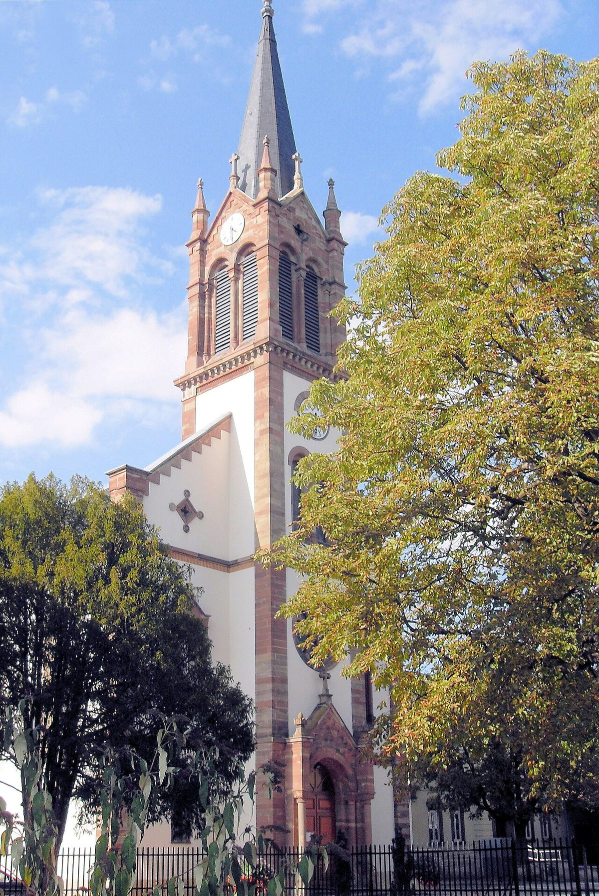

프랑스 생루이시, 생샤를 성당 지붕 20년간 시민 태양광 협동조합에 내줘…약 35kWc 설비에 시민 출자 1만5,000~1만7,000유로 모금

연 3만5,000kWh로 13가구 소비량, 총사업비 5만5,000~6만 유로…2027년 하반기 가동 목표, 시장 "시 시설이 이 전기를 쓰는 데 관심"
프랑스 알자스 남부 생루이시가 부르펠덴 지구 생샤를 성당의 지붕을 시민 태양광 협동조합 '에네르지 파르타제 앙 알자스(EPA)'가 20년 동안 쓰도록 하는 협약을 며칠 전 맺었다. 이 지붕은 협동조합의 지역 모임 '세 나라 국경 시민에너지(EC3F)'가 넓은 면적을 보고 후보로 고른 곳으로, 약 35kWc 설비를 올려 해마다 3만5,000kWh, 13가구가 한 해 쓰는 만큼의 전기를 만들 계획이다. 총사업비 5만5,000~6만 유로 가운데 1만5,000~1만7,000유로는 시민 출자 모금으로 모으고, 나머지는 협동조합 자기자본과 그랑테스트 지역의 '클리막시옹(Climaxion)' 보조금(2만 유로 기대), 필요하면 은행 대출로 채운다. 착공일은 아직 정하지 않았으며, 먼저 지붕 구조를 진단해 얼마나 올릴 수 있는지 따진 뒤 가능하면 지역 업체로 시공사를 골라 2027년 하반기 가동을 목표로 한다. 생산 전기는 주로 지역에서 쓸 계획인데, 스테파니 게르테이스(Stéphanie Gerteis) 시장은 판매 가격에 달린 문제라면서도 시 시설이 지역에서 만든 이 전기의 혜택을 받는 데 시도 분명한 관심이 있다고 밝혔다. 같은 협동조합이 시민 모금으로 리스바흐 재활용센터 지붕에 세우는 태양광은 며칠 안에 실제 공사 단계에 들어간다.
시민에너지 관점
시가 지붕을 20년 내주고 시민이 사업비의 4분의 1 남짓을 모으는 이번 구조는, 공공건물 지붕이 시민 출자 발전소의 가장 손쉬운 출발점이라는 것을 다시 보여 준다. 35kWc로는 효과가 미미하다는 지적이 있을 수 있지만, 같은 협동조합이 재활용센터에 이어 성당으로 지붕을 넓혀 가듯 작은 설비가 하나씩 늘 때마다 출자자와 운영 경험도 함께 쌓인다. 프랑스는 2015년 에너지전환법으로 주민과 지자체가 재생에너지 사업에 출자해 참여하는 길을 넓혔고, 생루이의 시민 협동조합은 그 바탕 위에서 공공 지붕을 차례로 얻어 가고 있다. 국내 지자체도 청사·체육관·복지관 지붕을 시민 협동조합에 장기로 빌려주고, 그 전기를 공공시설이 사서 쓰는 계약까지 열어 줘야 한다.
출처: L'Alsace 2026-11-05 Sébastien Spitaleri 원문 보기
창간 전 시험 발행 기사입니다.
フランス・サン＝ルイ市、サン＝シャルル教会の屋根を20年間市民太陽光協同組合に提供…約35kWcの設備に市民出資1万5,000～1万7,000ユーロを募集
年3万5,000kWhで13世帯分の消費量、総事業費5万5,000～6万ユーロ…2027年下半期の稼働目標、市長「市の施設がこの電気を使うことに関心」
フランス・アルザス地方南部のサン＝ルイ市は数日前、ブルフェルデン地区にあるサン＝シャルル教会の屋根を、市民太陽光協同組合「エネルジー・パルタジェ・アン・アルザス（EPA）」が20年間使えるようにする協定を結んだ。この屋根は協同組合の地域グループ「三国国境市民エネルギー（EC3F）」が面積の広さに着目して候補に選んだもので、約35kWcの設備を載せて年間3万5,000kWh、13世帯が1年に使う分の電力をつくる計画だ。総事業費5万5,000～6万ユーロのうち1万5,000～1万7,000ユーロは市民出資の募集で集め、残りは協同組合の自己資金とグラン・テスト地域圏の「クリマクシオン（Climaxion）」補助金（2万ユーロを見込む）、必要なら銀行融資で賄う。着工日はまだ決まっておらず、まず屋根の構造を診断してどれだけ載せられるかを調べたうえで、できれば地元企業から施工業者を選び、2027年下半期の稼働を目指す。発電した電力は主に地域で使う計画で、ステファニー・ゲルテイス（Stéphanie Gerteis）市長は販売価格次第だとしつつも、地域でつくったこの電気の恩恵を市の施設が受けることに市としてもはっきり関心があると述べた。同じ協同組合が市民の出資を募ってリースバッハのリサイクルセンターの屋根に設ける太陽光は、数日中に実際の工事段階に入る。
市民エネルギーの視点
市が屋根を20年間提供し、市民が事業費の4分の1余りを集める今回の仕組みは、公共建築の屋根が市民出資の発電所にとって最も取り組みやすい出発点であることを改めて示している。35kWcでは効果が小さいとの指摘もありうるが、同じ協同組合がリサイクルセンターに続いて教会へと屋根を広げていくように、小さな設備が一つ増えるたびに出資者と運営の経験も積み上がる。フランスは2015年のエネルギー転換法で住民や自治体が再生可能エネルギー事業に出資して参加する道を広げており、サン＝ルイの市民協同組合はその土台の上で公共の屋根を一つずつ手に入れている。韓国の自治体も、庁舎・体育館・福祉館の屋根を市民協同組合に長期で貸し出し、その電気を公共施設が買って使う契約まで開くべきだ。
出典: L'Alsace 2026-11-05 Sébastien Spitaleri 原文を読む
創刊前の試験発行記事です。
法国圣路易市把圣查理教堂屋顶出借给市民光伏合作社20年…约35千瓦峰值设备向市民募资1.5万至1.7万欧元
年发电3.5万千瓦时，相当于13户家庭用电量，总投资5.5万至6万欧元…目标2027年下半年投运，市长称“市属设施有意使用这些电力”
法国阿尔萨斯南部的圣路易市几天前签署协议，把布尔费尔登区圣查理教堂的屋顶交给市民光伏合作社“阿尔萨斯共享能源（EPA）”使用20年。这片屋顶是合作社的地方小组“三国边境市民能源（EC3F）”看中其面积大而选定的候选地，计划安装约35千瓦峰值的设备，每年发电3.5万千瓦时，相当于13户家庭一年的用电量。总投资5.5万至6万欧元中，1.5万至1.7万欧元通过市民出资募集，其余由合作社自有资金、大东部大区“Climaxion”补助（预计2万欧元）以及必要时的银行贷款补足。开工日期尚未确定，第一步是检测屋顶结构、确定能承载多少设备，然后尽量从本地企业中选定施工方，目标在2027年下半年投运。所发电力计划主要在本地使用；市长斯特凡妮·格尔泰斯（Stéphanie Gerteis）表示，这取决于售电价格，但市政府确实有意让市属设施享用这些本地生产的电力。同一合作社通过市民出资在利斯巴赫回收中心屋顶建设的光伏项目，几天内就将进入实际施工阶段。
市民能源视角
市政府出借屋顶20年、市民筹集四分之一多投资的这一结构再次表明，公共建筑屋顶是市民出资电站最容易起步的地方。有人会说35千瓦峰值效果微不足道，但正如同一合作社从回收中心扩展到教堂，每多一套小设备，出资者和运营经验也随之积累。法国在2015年通过能源转型法拓宽了居民和地方政府出资参与可再生能源项目的渠道，圣路易的市民合作社正是在这一基础上逐一争取到公共屋顶。韩国地方政府也应把政府楼、体育馆和福利馆的屋顶长期出租给市民合作社，并开放由公共设施购买这些电力的合同。
来源: L'Alsace 2026-11-05 Sébastien Spitaleri 查看原文
本文为创刊前试发行文章。
France's Saint-Louis lends the Saint-Charles church roof to a citizen solar cooperative for 20 years; about 35 kWp system seeks 15,000-17,000 euros from local investors
35,000 kWh a year, equal to the consumption of 13 households, at a total cost of 55,000-60,000 euros; start-up targeted for the second half of 2027, with the mayor saying the city is interested in using the power
The town of Saint-Louis in southern Alsace, France, signed an agreement a few days ago allowing the citizen solar cooperative Énergies partagées en Alsace (EPA) to use the roof of the Saint-Charles church in the Bourgfelden district for 20 years. The roof was picked as a candidate for its size by the cooperative's local group, Énergie citoyenne des 3 frontières (EC3F), and the plan is to install about 35 kWp producing 35,000 kWh a year, the annual consumption of 13 households. Of the total cost of 55,000 to 60,000 euros, 15,000 to 17,000 euros is to be raised from citizen investors, with the rest coming from EPA's own funds, a hoped-for 20,000-euro Climaxion grant from the Grand Est region and, if needed, a bank loan. No start date has been set: the first step is a survey of the roof structure to see what it can carry, after which a contractor, ideally a local firm, will be chosen, with operation targeted for the second half of 2027. Most of the power is to be used locally, and Mayor Stéphanie Gerteis said that while it would depend on the sale price, the town has a real interest in letting its own facilities benefit from this locally produced electricity. The same cooperative's citizen-funded solar system on the roof of the Liesbach recycling centre is due to enter the construction phase within days.
Citizen Energy View
A town lending a roof for 20 years while citizens raise a little over a quarter of the cost shows once again that public roofs are the easiest starting point for citizen-funded power plants. Some will say 35 kWp makes little difference, but as this cooperative moves from a recycling centre to a church, each small system adds investors and operating experience along with it. France widened the way for residents and local authorities to invest in renewable energy projects with its 2015 energy transition law, and the citizen cooperative in Saint-Louis is building on that base by securing public roofs one by one. Korean local governments should likewise lease the roofs of offices, gyms and welfare centres to citizen cooperatives on long terms, and open the door to contracts under which public facilities buy that power.
Source: L'Alsace 2026-11-05 Sébastien Spitaleri Read the original
This article was published during the trial period before launch.